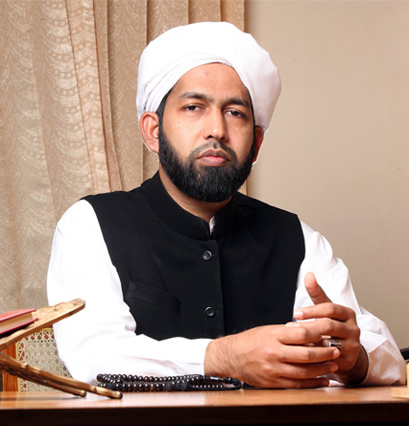

Jamia Madeenathunnoor was established as a home for Contemporary Islamic learning integrated with modern liberal arts subjects. Here the course structure is designed for the students, who completed elementary schooling or matriculation. This provides a hub for exceptional learning of Islam in contemporary times, including strong erudition in classical Islamic knowledge tradition and contemporary Muslim intellectual engagements.
The seven years long structure is strictly follows a multidisciplinary academic approach and social experiments method, to blend students to look towards the economy of knowledge in their living society. This unique meeting the demands of knowledge with practice ensure the breed to produce a generation of community leaders, who can also contribute for the gradual growth of society in multilateral segments.

Rector's Message
Dr.AP Abdul Hakkim Azhari Al Kandi
Welcome to Markaz Garden Group of Instituitions. A nongovernmental and philanthropic Institute founded in 2001 to mould a highly talented professionals and scholars. Today, it is evident from our performance that it is an Institute of national impact and International repute, a premier institute for knowledge seekers from different parts of the globe. However, no one, nor I, can claim to be the sole architect of its success. It would not have been possible for the Institute to be what it is today without the constant succor and support of MG community. Our goal is to be a “CENTRE OF EXCELLENCE” so that we remain relevant to our society.
In so doing, we focus on six interweaved concepts creating academic excellence, blending modern trends with traditional wisdom, providing multilingual classes, imbibing sense of social responsibility, fostering imagination,and staying connected with beautiful minds. To be so, we are constantly looking new horizons for the upliflitment of Muslim community by using bench marked curriculum and cutting edge technology.
Through these processes, we are able to foresee the complex problems that our society may face tomorrow and provide solutions to these problems ahead of time. Furthermore, we realized that if we do not learn lessons from our traditional wisdom and blend it with current trends, we would turn short sighted. Therefore, we have founded Madeenathunnoor College of Islamic Science and Markaz Garden School of Management to spread the message of Islam all over the world. We are a work in progress. Together we are creating the architecture of a unique academic space that balances these three paradoxes: Excellence and Equity; High Tech and High Touch; Global Vision rooted in Local Context. The helping hands of well wishers from India and Abroad helped us to attaining this success and we anticipate their cooperation and guidance in future as well.
Philosophy
Madeenathunoor College of Islamic Science (MNC) was established in 2000 for bringing the nation with utmost educational excellence. It mainly invested to fuel the margins of the society for making them to prepare outlooks and visits towards the betterment in their life world itself, with promoting excellent education and community training. The scope and role of MNC stands to terminate the newly emerged social schism and animated binaries of human engagements after fostering the thoughts and works of national integration along with the global peace production.Rather a mere educational institution, MNC moved forward to draw the circle of developmental anticipation of social engineering and built constantly a revision of institute also, as a culture to live a life of being together forever. This idea that vested at the grounding floor of MNC is the coal turns to bring the possibilities of disseminating knowledge capitals and technical expertise for the social welfare and community development. This is the breed of future leaders and community developers that MNC wants to create, with better intellectual capital and social consciousness.
Methedology
MNC follows a very systemic academic affair and campus motion that strictly in pursuit of the advanced student-society blending of education and services. Its overall curriculum has been designed to unlock the human potential through advanced training in various sciences and voluntary services. The founding methodology of MNC was created at the focus of making nation for the renewal of society in education. And, that blended uniqueness is the premium feature of MNC in the country, which has working to the uplift of nations’ downtrodden to the mainstream focuses.
A Global Atmosphere
MNC is actively committed to contribute the vision of achieving India 2020 by building good capacity human recourses in active research and constant community services. For that the campus is fully to enrich the outstanding academic experience and innovative scientific engagements in all its everyday routines. MNC is also helps to nurture the capable global students who have the tendency to interface the challenges of present day’s social, economic and cultural traits. Also, some international students also getting training here under this vision of MNC, who later become the ambassadors of peace and equality in different parts of the world, along with that many reputed figures in the world who have the fingers in different disciplinary training, multiple experiences and diverse cultural backgrounds came here and meet the students, that again enrich the students capacity open up widen possibilities of erase the boundaries in between the worlds.